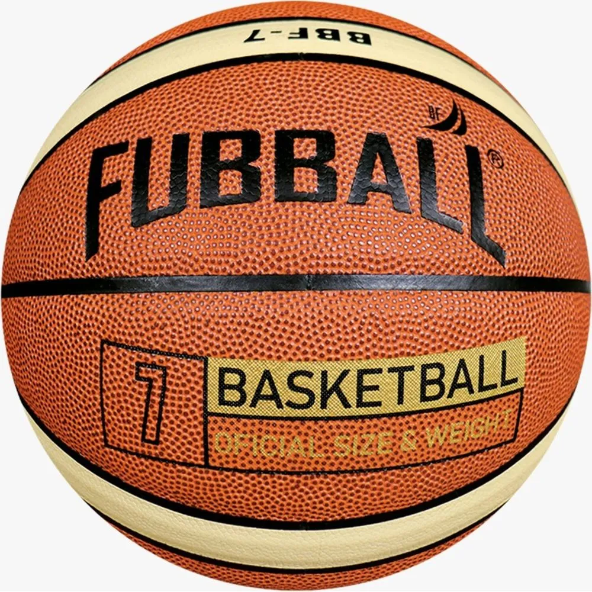
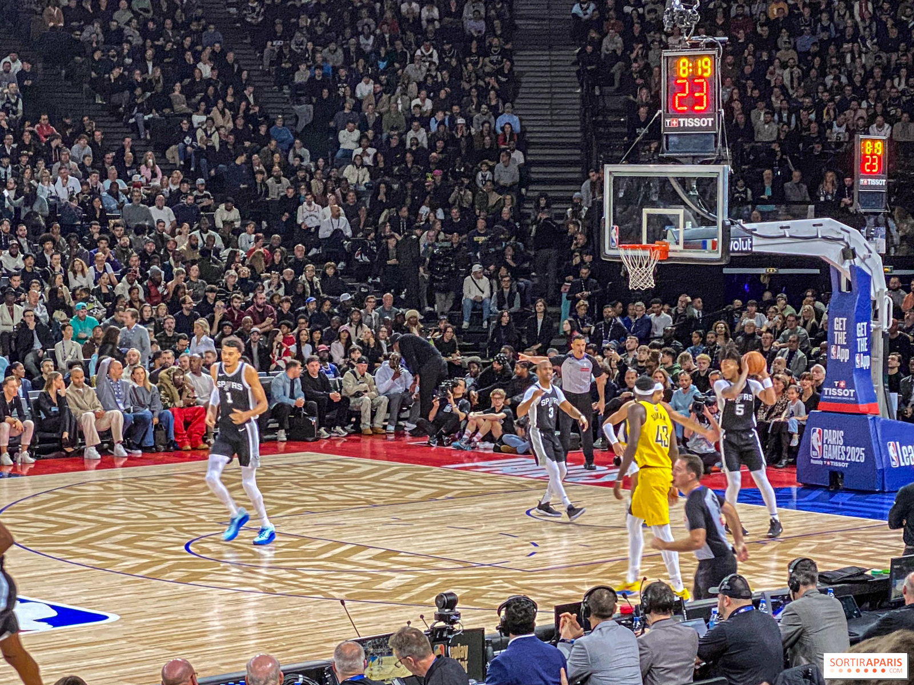

Mi Pasatiempo Favorito: Jugar Básquet
Jugar básquet es una de las actividades que más disfruto. Me ayuda a mantenerme en forma, divertirme con mis amigos y aprender sobre trabajo en equipo.
Razones por las que me gusta el básquet
- Me mantiene activo
- Puedo compartir tiempo con mis amigos
- Desarrolla mi coordinación y reflejos
- Es muy divertido
Pasos para jugar un partido
- Formar dos equipos
- Explicar las reglas básicas
- Comenzar el partido con un salto entre dos
- Anotar puntos lanzando la pelota al aro
- Gana el equipo con más puntos al final del tiempo
Imágenes de básquet

